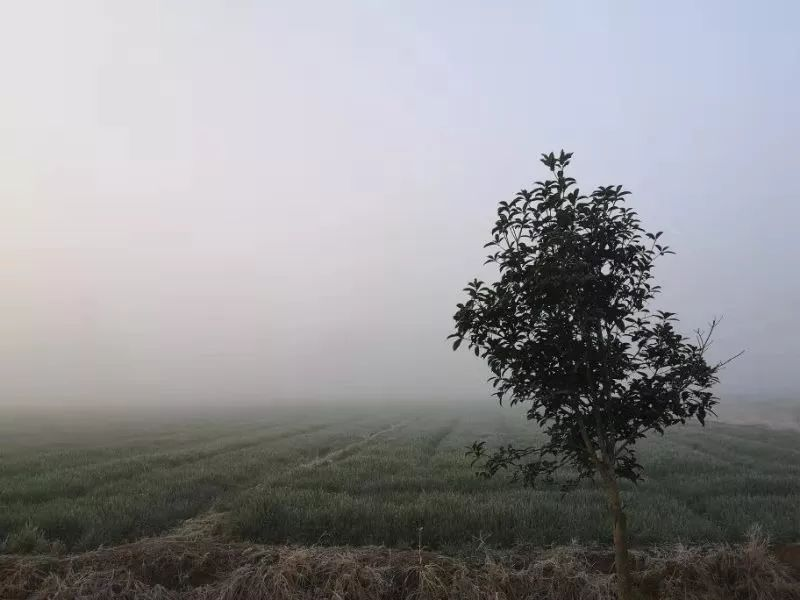
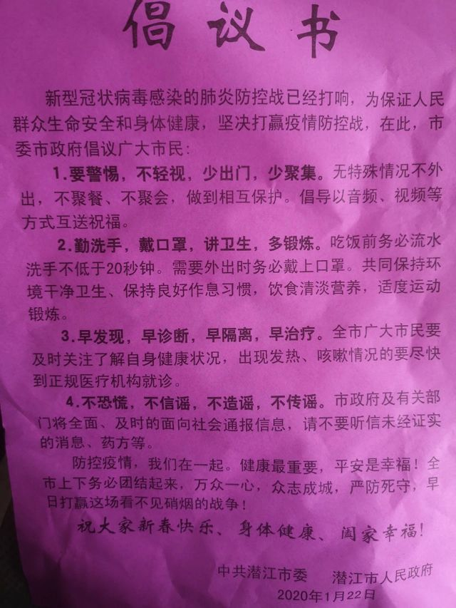
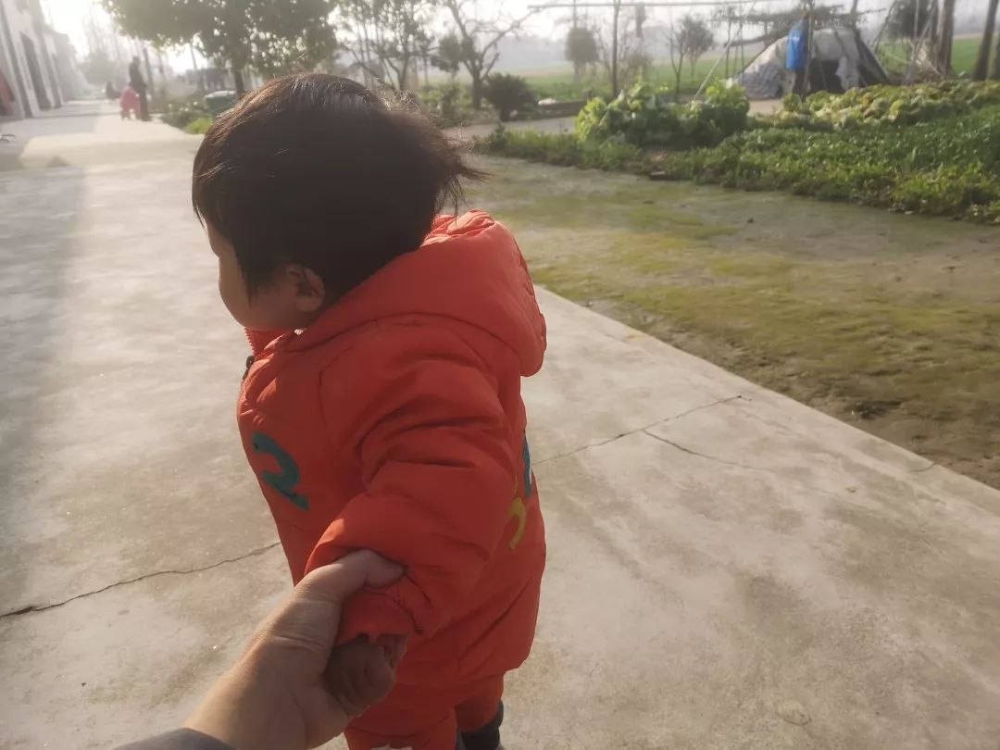

小镇还是没有口罩 Ⅰ 隔离日记
原文链接 备份链接 正月初二，1月26日，从武汉回潜江第六天。 潜江今日仍无病例确诊。 早上起来，精神不错。昨晚种种郁结一扫而光。 听丁雪的话，加了衣服。原来计划初四左右回武汉，衣物带的少。也低估了潜江的寒冷，无裤子可加了。岳母 …


作者 | 谈骁 (武汉诗人，春节自我隔离在潜江小镇。)
编辑：康晓
出品｜深网·腾讯小满工作室
欢迎下载腾讯新闻APP，阅读更多优质资讯

编者按：通过湖北各城普通民众的视角和抗疫日记，记录这一段我们永不会忘记的历史。封城之际，只有个人的视角和经验，被动接受各种消息，真伪难定。至于政府、民间的各种通告和推送，不乏常理之外的，个人也难评判。但忠实于个人经验的观察，起码保证了诚实，也算一个窗口。这大概是那一点意义所在。是为抗疫日记系列之一潜江。

1月21日，阴雨
今天准备离开武汉回潜江了。
我18号送妻子和女儿小溪回潜江岳母家，母亲也18号经汉口站回了老家恩施市建始县。按照往年情况，过年期间我也不会再回武汉，但今年公司把年会定在了19号，加之集团严格考勤，只好回去继续上班。没想到年会上领导表示，年会后考勤随意，不做强制要求。
从18号开始，冠状病毒的消息已经在朋友圈发酵。昨天出门，我不仅戴了口罩，还拿了一个红外测温仪（之前给孩子准备的）。行至半路，同事在群里发了口罩图。知道防霾口罩没用处，只好在京东下单一次性医用口罩，承诺当天送到。下午约了黄建树和百草园书店的老王吃饭，临时取消。回家路上去了几家药店，口罩还有卖的，但都是普通的护理口罩。楼下的药店甚至堆了一柜台板蓝根。
晚上，等京东口罩间隙，刷新闻看到钟南山和白岩松连线，确定人传人了。且得知有14名医护人员被感染（两个小时后武汉方面说是15人）。错愕之下，赶紧按照一个公众号的口罩攻略，去淘宝搜了几个小店，买了一百多个医用外科口罩。发货时间很晚，就当为年后囤货了。
六点半醒，看消息，武汉仅新增两人。正诧异间，发现数据是19日22-24时的，昨日新增病例没有公布。一边刷新闻一边收拾行李准备回潜江妻子家，八点半才出发。
路上有雨，走得有点慢。到仙桃服务区停留，吃早餐。服务区内有两个志愿者，戴着口罩，旁边放着许多温度计。大概是让人自测体温的。十一点多下了高速。没有回家，先去市内转了一圈。昨天妻子交代，要给岳父买烟。导航去中百仓储。途经三个药店。就第一家药店有医用外科口罩，雷士海诺的。买了40个，48元。比淘宝便宜，于是把昨天淘宝买的退掉了。后两家和武汉类似，都是普通的护理口罩。

回家已近中午一点。潜江整体没有什么危机感（除了药店）。岳父岳母都知道这事，但普遍觉得家里还很安全。下午四点左右，又去杨市买水果，街上也没人戴口罩。我想起潜江有个诗人朋友杨汉年，在杨市开了一家批发超市。我导航过去，找到了他的超市。因为戴着口罩，我没有上前打招呼。妻子和她妹妹买了50块鞭炮。妻妹表示杨汉年很好说话，说便宜就便宜了一点。我说：“毕竟他是诗人嘛。”
妻子堂兄比我晚两个小时到。他送他母亲回家，装了点青菜后又要回武汉。我们都劝他把妻女接回来，在家过年好了。他说妻子还没有放假，没法子，只能回武汉。
晚上，许多朋友都在问我情况，我回复了几人，又发了一条朋友圈：谢谢朋友们牵挂。我今天早上已离开武汉（未见咽痛、咳嗽、发烧），应该不会把病毒带出去。希望年后疫情可控，还能回武汉上班。
没多久叔叔短信来，问我在哪里。我说在潜江，静观其变，随时准备逃回恩施。用“逃”这个字，并不夸张，我有种预感，这次新型冠状病毒肺炎不会轻易消停。在我心里，一直把老家恩施当做最后的依托，任外面腥风血雨，总觉得恩施是安全的。
1月22日，阴雨
这两天关注点一直在武汉。今天早起，看到黄冈发现了十几例，且有一名医护人员感染。到下午，潜江、恩施也有疑似病例。
邻居家的小孩，小名棉棉。十岁。感冒几天了。听岳母说是低烧。我还有点疑心，隔壁的丁正表示无碍。他是医学院学生，这一年来在中南医院实习。毕竟是学医的，对我们的惊慌，他颇有点不以为然。
我的忐忑，一方面是因为病毒本身，更重要的，是因为风波的中心在武汉，有种“置身大风暴”下的激动。但我多么希望这风暴永远不要到来。
潜江阴雨不停，太冷了，我尽量带着小溪室内活动。妻子却总想带她去楼下院子。上一次体检时，医生说小溪两眼屈光度不一致，需要多看远方。
我缩在屋里翻朋友圈，拍记录片的朋友春林发了一段话：三天前还跟同在武汉的朋友们乐观地讨论疫情，结果隔天就被打脸。一个大学的朋友许真回复说：人在病毒这玩意面前太渺小了（一开始大家也不咋可能对它有全面的认知——这本来也是个超级专业的事情），没想到这玩意短短一两个星期就发展到人际之间传播了（最早期的病例确实没有人际之间传播，比如报道出来的一个23岁的重症患者，他姐姐一直照顾他也没有感染）。其实病毒也在求生存，它的“进化”能力也更强。这是大家万万没有想到的，
朋友黄建树坐火车回山东岳父母家了。晚上和他聊天，他和我差不多，几乎闭门不出。何时能回武汉？我们都有些悲观。

1月23日，阴雨
武汉封城了。
半夜的消息。我看到时举着手机呆住了，一时不敢相信是真的。只在电影或者小说里见过封城，有生之年竟然能亲历，而且是自己生活了十几年、前天刚刚离开的城。
通告说，早上10点开始，市内公共交通、长途汽车站、火车站、机场关闭。死亡人数也翻番了。昨天只有9人，今天是17人。全国各地疑似人员都是几个，几十个。朋友圈的反馈是，武汉的医院住满了。也看到有消息说医院不收，不知真假。
留在武汉的朋友不少。有一个表弟，在楚河汉街一家“大菊铁板烧”上班。前不久经人介绍，谈了一个女朋友。腊月十七提的亲，原来计划正月初四回家定亲（恩施方言叫“看地方”），看来要耽搁。
同事杨晨怀孕快九个月了，挺着大肚子在家——就是疫区的收治中心金银潭附近——早上突然说，老公早上发烧。她一片茫然，还不敢让自己父亲知道，只是让老公家人送饭到门口，他们去取了吃。且两人各在一个房间。隔得太远，我们只能口头安慰，顺便帮她声讨她老公：他开了空调躺床上，觉得越来越冷，温度丝毫不见降低。杨晨见他反常，进去发现他竟然开了制冷。
我茫然不安之外，又有一种荒诞感，未来无可给与，只剩下一些当下的惶恐瞬间。我对妻子说，如果潜江也不安全了，就回恩施吧。回到山里，鸡犬不相闻，自然没有感染。妻子反问：现实吗？你回去也不过回到老家景阳镇上，人流不比现在多？她说的没错，我哥在镇上开家超市，这两天生意最好。一天接触的人怎么说也有五六百。隐患极大。昨天我在家里的群说最好关门歇业。他完全没有理会。到了小城小镇，危机感确实锐降。办公室另外一个同事，昨天还去参加了一场婚礼。她让家里人少出门，戴口罩。还被她爸说了一通。但事实上，武汉周边城市，感染量不会比北上广少吧。但防护程度、重视程度都低太多了。很有可能，接下来一段时间会大规模增长。
妻子的堂兄前天去的武汉，原计划在武汉过年。封城之后，发现超市无菜可买，遂决定回来，可能开车到了武汉西，发现高速也已封闭，只好折回武汉。
有让人感动的消息：湖南、上海、四川的医生紧急驰援。看到朋友圈的图，上海的首批医师坐高铁，今天晚上就能抵达。也有让人不安的消息。微信群“川鄂情”里，有深圳的师姐转发深圳小区的聊天截图。深圳市南山区科苑学里科技苑58区住宅楼已经发了通知，凡是发现鄂字头车、410开头的身份证号，一律上报，禁入。

周围所有的人都在讨论封城。这个消息太大了，足够引起一个普通农民的关注。和岳父母说，今年就不要出门了。门口就是菜园，不需要去菜市场。岳母早做了准备。早上她已经把过年的肉卤好，够吃到正月十五。之前买了许多鱼，以鲫鱼为主，全部喂在后面的大水缸里。岳父说，没有鱼粮，只是养着而已。可能在它们变瘦之前，才能全部吃完。

湖北潜江杨市刁庙村，门口的菜园
红外体温计我也带回了潜江。拿出来想给每个人测体温。温度太低，手焐探头加热了两分钟，温度计才回归正常。给家里每个人测了一遍，都正常。
接下来几天肯定不出门了。带了四本书回来：《冬泳》《夜的命名术》《红发女人》《天真和伤感的小说家》，接下来几天，就安心读书带娃吧。
七点半，看到《潜江市新型冠状病毒感染的肺炎防控指挥部1号令》，其中有一条：
落实农村、社区等基层地区防控措施。自即日起，各级村委会、居委会每日走访了解常住人口、外来人口和返乡人员的健康状况，发现发热、咳嗽的人员迅速登记上报，并提醒其尽快到医疗机构就诊。
明天会有人来走访我吗？
1月24日，除夕
从来没有想到，会过一个充满不安的除夕。早上看到的最让人心痛的消息，说试剂盒完全不够用，以致部分疑似病人无法确诊。只能“不排除感染”，然后放病人出去，交叉感染隐患极大。这是《人物》的报道。这意味着，一旦试剂盒足够，武汉确诊患者会大幅度增加。
潜江的年味还是很浓的。孩子们有很多鞭炮玩；除夕当天要洗澡，从头到脚，焕然一新之意；不过并无年夜饭，而是年午饭：中午两三点吃饭，饭毕上香、清扫，再就是打麻将了。周围的人麻将瘾极大，家家户户都有电动麻将桌，对他们来说，过年在很大程度上就等于打麻将（平时打得少，因为大家都在外地工作，凑不齐一桌）。除夕当天，吃了年午饭，雷打不动的一场麻将，一直到深夜，晚上是不吃饭的。
三点多，与母亲视频。她18号回的恩施（建始县景阳镇），之前完全没有意识到危机，也没有隔离。这两天意识到严重性了，问了我一些情况。我主要告诉他们，明天不要回老家拜年了。族里有个奶奶，去年十二月过世，按照风俗，正月初一她的子侄应该齐聚，回家“拜新年”。母亲同意明天不出门，又问我年后安排。现在的情况看，年后我们也很难按时上班，且让母亲在家多带些天吧。
今年因为我在，岳母下午六点多竟然下了牌桌，回来热饭给我们吃。饭后给小溪洗完澡，回到楼上，春晚如期举行，前些年，哪怕是为了吐槽，也会有一搭没一搭看几个节目。今年心境不同了，一个画面也没有看。
朋友圈的C一直在筹措物资，护目镜防护服消毒液连花清瘟胶囊，等等，支援一些医院。她们人在武汉城内。好像筹了十几万个口罩，但三证不符合要求，没法捐出，只能对接给一些大的机构。下午六点四十九，她发朋友圈：“一线的医护一边哭，一边我这送不了，难受！”现在她又在呼吁，捐赠的需要三证齐全。
看到一张武汉人省内流入城市图。黄冈、孝感居前列，恩施比较靠后，潜江则更后。我岳母所在的刁庙一队，从武汉回来的人不少，就我所知，除了我、妻子、女儿小溪，还有隔壁的丁正和王艺。这个比例不能算低。
现在很多人和媒体注意到了武汉周边城市圈，尤其是农村的疫情。
睡前，看到潜江发布了二号令。
第三条说：各地政府要安排1名领导带班、2名工作人员、2名公安干警、2名医护人员，实行24小时轮班，对返乡人员询问来历、检测体温、登记信息。各地要督促村（社区）取消一切群体性宴席、集会，广泛动员市民不外出、不聚会、不串门，出门一定戴口罩。
昨天的一号令也提到了这一点。只是今天没有人来。我竟然隐隐有点期待。也许是想以此来看潜江的重视程度，以巩固自己的安全感。毕竟，疫期大概率要长住于此。
1月25日，阴天
正月初一。从武汉回来第五日。潜江目前无感染，但最近的天门有3例确诊。
昨天上午，妹夫开车回了天门。他是上门女婿，家里只有一个老母亲，放心不下，除夕年饭没吃就走了。早上，岳父电话他，得知天门回潜江路已经封锁，这几天回不来了。
恩施已有11例。父母在家，没有外出拜年。两个姨父、两个舅舅、外公外婆和父母在一个小镇，相隔几百米，都没有走动。可见媒体的全面报道还是有用的——而在此之前，他们是天天聚会的。现在隔离在家，也算亡羊补牢。
其实我最担心的是我母亲，她1月18日从汉口站回家，没有任何防护。其时，武汉的感染已有不少，只是没有引起人们注意。
昨天鞭炮炸了半夜，小溪睡得还好。只是早上起来，打喷嚏流鼻涕，昨晚洗澡，她大概着了一点凉。
想起12月28日，离武汉报道新病毒感染还有两天，根据现在的消息反推，其时武汉已经有不少感染。那天下午，我们还在外文书店聚会做活动。活动之后在首义路艳阳天宵夜，大家举杯说，最难的2019年已经过去。哪里想得到，2020年开年会到此种境地。
看书不大有心情，也完全没有写诗的情景。当此之际，只觉得茫然无力。一介书生，困守小村，白天带娃，抽空看新闻。除了忧心，竟然不知道可以做点什么。
和岳父母谈到潜江的防控，他们说，昨天深夜，有工作人员来发过传单。传单在外面窗内，是潜江市委市政府的倡议书，落款时间是1月22日。总结了四点：“要警惕，不轻视，少出门，少聚集；勤洗手，戴口罩，讲卫生，多锻炼；早发现，早诊断，早隔离，早治疗；不恐慌，不造谣，不信谣，不传谣。”
下午两点，终于有人上门统计返乡人员信息。我在屋内抱小溪，出来时人已经转去别家了。等他折返，我们拦下他，说明了自己的情况。他说本来只统计从武汉返乡的本地人，没有统计流动人口——我们户籍不在潜江，只能算流动人口。从他那里得知，刁庙一组共70余户人家，从武汉回来的人不少，他只统计1月10号后返回的，共有十人，算上我们三个流动的，计13人。他叫郑玉堂，是一组的工作人员。临走，我加了他微信。郑玉堂刚走，来了一辆宣传车，播报的还是倡议书里的内容。

回去看新闻，从梁文涛微信里看到了潜江的疫情通报，潜江市疾控中心发的，说截至上午8时，发现疑似病例51例，其中14例经过市疾控中心完成初筛，已经送往省疾控中心复检。梁文涛在潜江媒体工作，信息更新得比较快。转发的潜江指挥部4号令说，晚上24点，暂时关闭全市高速公路出口通道，封闭全市国、省干线进出口通道及周边县市相连的通村公路。
这算是真正的封城了。
武汉市也出了九号通告，26日0时起，中心城区禁止机动车通行。市民确有通行需求的，按指挥部第八号通告执行，各社区配备足够车辆保障需求。八号通告大意是，武汉市调拨6000辆出租车，每个社区3-5台，由社区居委会统一调派，为辖区居民出行提供免费服务。
不过，没过太久，又发了新通知，说“对禁止通行从车辆通告车主，对未通告的车辆一律实行通行”。这算是留有余地吧。
我们想象的疫情已经很严重了，接着的一条新闻，也在印证疫情的严重性：今天下午3点半，武汉市新型冠状病毒感染的肺炎疫情防控指挥部举行调度会，决定在武汉蔡甸火神山医院之外，半个月之内再建一所“小汤山医院”——武汉雷神山医院，新增床位1300张。
火神山，雷神山，空荡荡的街市，统一调配的出租车。恍如隔世，人不在武汉，这种恍惚更增几分。我希望自己此时在武汉。身在武汉的感觉，和我身在潜江也并无两样：一样的不能出门，不能上高速；一样的自我观察，自我隔离；一样的孤岛体验。如果说有区别，不过是潜江多几个人，楼下有孩子喧闹，门口有个菜园，有岳母做饭。仅此而已。
前面提到过的许真，是大学老师，一位特别淳朴、酒量一般、去年生了二胎的朋友，早上7：20，他发朋友圈，说自己回到学校家中，遵医嘱居家隔离。老家亦安排妥当。我还没当回事，晚上19：18，他更新消息，只有一句：我需要帮助。20：08，又更新了一条：学院已经在想办法。诸位容我休息。
他已经感染。我第一时间告诉了我们共同的朋友聂文，彼此都觉得无力。只能留言说，等他下次更新朋友圈。聂文在武穴，一直在朋友圈转发各种求助消息。她对我说：“最近才发现我特么那么爱武汉。才发现那么爱朋友们。”我说：“我一直特别爱武汉。”
这倒不是最近焦虑生出的眷念，我以前在诗里写过：我爱每一个我住过的地方。我在武汉住了十几年，我的爱情、我的家庭、我的朋友、我的写作都在那里。另一个朋友在朋友圈说：“尽管在武汉读书工作三十多年，对这座永远在建设中的城市并没有多少好感，一直把自己当作它的过客。这次回老家过年，不知道何时才能返回时，才觉得武汉是那么美，那么丰富。封城之后的武汉空旷而神秘。”他这种隔离在外生出的爱，大概和聂文类似。
下午嗓子有点发干（希望是因为烤火太久上了火），后来竟然觉得头晕，测体温还正常。妻子见我头晃来晃去，半是忧心半是嫌弃，让我明天再加一条裤子。
这两天我时时觉得自己生病了，身体每一点异常都要回味、感觉很久。希望无碍，接下来一周无碍，就可以解除隔离了。
临睡，看到许真更新了朋友圈：“已到医院。”希望他平安。
1月26日，阴天
正月初二。早上起来，精神不错。昨晚种种郁结一扫而光。
听妻子的话，加了衣服。原来计划初四左右回武汉，衣物带得少。也低估了潜江的寒冷，无裤子可加了。岳母找了一条棉裤给我，红色。反正隔离在家不出门，我很乐意地穿上了。
妹夫还没有回来。我告知妻妹，天门昨日增加两例。她倒不太担心——也许是无暇担心。她带两个孩子，大的三年级，还算懂事；小的才一岁，每天也缠在她身上。岳父母有时会搭手，但也只是搭手而已，主要消耗还是在她身上。
同事文娟转来杨黎的武汉诗人访谈，问我们有没有类似的操作。我老实回答说没有，力有不逮，也无心情。她说《收获》想约她写封城记，但人不在武汉，就拒绝了。我把昨天日记转她看。和她讨论这种文字有没有价值。可能有一点意义，一点而已，不大。
封城之际，只有个人的视角和经验，被动接受各种消息，真伪难定。至于政府、民间的各种通告和推送，不乏常理之外的，个人也难评判。但忠实于个人经验的观察，起码保证了诚实，也算一个窗口。这大概是那一点意义所在。
文娟是文艺学硕士，最后总结道：“这就是技术的吊诡。一方面身体隔绝起来，除了在小空间里吃喝拉撒什么也看不到，一方面网络上真真假假足，信息滔天冲撞而来。人在这中间，好分裂啊。”
一个人触角确实太少。日记写了一周，其实写我个人不多，准确说应该是“我和我的朋友们”。写朋友，则涉及隐私。
吃完早餐，我把昨天日记发在了个人朋友圈。很快许真发消息来，说不想以这种方式为人所知，让我修改。我既喜且愧。喜的是他有暇关注这个，说明在医院状态尚好；愧的是在医院还要为这个劳神。我修改时隐去他的名字和单位，给他道歉，相约安定后在武汉一聚。
照例，在单位群里汇报今天情况。杨晨私聊我，说今天发烧了。我惊讶莫名，回给她一串省略号。很快想到前几天她老公发烧，刚降下去，可能不是肺炎。她自己也比较乐观，说隔几分钟量一次体温。除了发烧，就是腰酸，这是孕期正常症状。
午饭后，昨天来统计消息的郑玉堂带着村支书上门。先发了一沓口罩。全是字母，mascarilla faciales，desechable。网上搜索没搜出来，可能是用于出口的？村支书也不知道，只说是上面发的。发完口罩，重新登记了我们的信息：姓名，身份证号，回汉时间，电话。表上有“随访人”“包保人”栏。大概是定点落实到人。

隔壁棉棉病还没好。岳母说是普通感冒，低烧，每天去杨市医院打吊瓶。回潜江第一天，她来玩过一次，我看精神尚好。这么长时间没好，我很想去问下消息，被岳母阻止了。说棉棉身体底子差，以前一感冒也是这么久。
在群里问父母消息，小镇也已高度戒备，街上几乎没人。我哥的超市还开着门，生意照做。他本来有不少口罩，之前卖光了，自己已没有用的。镇上的几家药店都关了门，无处买口罩。街上的人自然都戴着口罩，可是多半是重复使用，做不到四个小时一换。农村物资短缺，应该是普遍情况。几天前武汉尚无口罩可买，何况僻远的农村。我手上还有四十多个闲置口罩，试了一下顺丰，已经不能收件了。
今天刷新闻不及前几天频繁。朋友圈武汉人居多，这会儿，很多人都在讨论外地人隔离、拒绝湖北人的消息。看了让人不适。高速关闸门，国道设路障，县道、乡道最简陋：一堆泥土和石块足矣。
南宁的璞闾，从昨晚一直在关注南宁对湖北人的态度，后来她转发的南宁对湖北及到访的游客安排须知，所有湖北籍游客统一安置在乡村大世界度假村入住，广东湛江的徐闻县处理与此类似。
在上海的诗人朋友冰马，经营一家民宿，有16个房间。他发了微信文章推送，说可以贡献出来给非从疫区出发的湖北人住。
写点开心的事。
小溪一岁一个月。回家之后，裹成了一个圆球，仍然热衷下地。尤其喜欢爬楼梯。回来的头两天，要扶她腋下走；这两天只需要轻轻提着她的手，稍作控制引导；偶尔放开她，她也能摇晃着走两步；我疑心她已可以走路，只是不敢放开我们的手。

这两天她睡眠亦好。今天下午更是破天荒睡了两个小时。晚上八点半入睡，到现在十点半，也一次没醒。
这几天的宅居，和我以前的假日生活并无两样。心神不宁，除了对身体反应的敏感，更多是因为外面的风暴：时时更新的病例增长和死亡带来的幻灭感，各种消息铺天盖地带来的隔世感。
张执浩老师在朋友圈说：“现在不仅时间过得特别慢，网速也很慢了。这才封城几天啊，就给人以恍若隔世之感。冷清，寂静，时不时能听见自己的心跳。”武汉的90后诗人喻诗颖在后面留言：“感觉我家水压都变小了。”
因为许真，我们重新在一个荒废已久的群里交流。聂文和许真关系最密切，大部分消息，都由她来告知。晚上，她告诉我们，许真在武昌的天佑医院，状态不好，都不敢闭眼，怕醒不过来，让我们都去安慰他，转移注意力。我点开和许真聊天窗口，一时竟不知说什么，只发了一串拥抱的表情。
杨晨发来信息。温度已经降到37.3。情况和她老公前几天一样。应该不是肺炎。
睡前，看到正在召开记者会。市领导说武汉确诊病例可能再增加1000例。对这些数据，我已有麻木之感。可能大家都进入了疲惫期，今天几个群里，也都比较安静。
最后记一则在“潜江诗群”里看到的潜江市委书记吴祖云60字疫情防控口诀：勤洗手，常开窗；戴口罩，把毒挡；少聚会，不徬徨；缓出行，同舒畅；病魔来。我刚强；遇不适，上医堂；粗淡饭，保安康；多运动，免疫强；破困局，勇担当；紧跟着，党中央。
1月27日，放晴
正月初三。
八点醒来，没来得及看疫情更新，先在群里看到同事胡晨的一条消息：科比死了。我脑子里的闪念是：可憋死了。她昨日发烧，闭门不出，觉得憋闷也不奇怪。疫情更新，昨天增长量吓人。睡前大概只有2000多，现在已经2700多。湖北当然是重灾区，增长371。不过武汉增长只有80例（很奇怪我会用“只有”这个词，大概是以前武汉增长得太多了，我希望以后每天都能用这个词，那说明武汉新增病例越来越少），其余都是下面各县市。黄冈已有150多例，比大部分省都多。恩施25例。潜江不再是空白，出现了5例，死亡一例。
抱着小溪下楼，今天是回潜江以来第一个晴天，外面阳光很好。门口的菜园和菜园外的大片麦子地，阳光下一派安详。完全不是灾难深重的样子。
看到朋友许真半小时前发了朋友圈：“渡尽劫波，死后重生。”在阳光下看这条消息，心里又多了一点暖意。希望他早日告别这新病毒，康复。
我这些天看新闻，主要通过微信。微博上得少。另一个去得频繁的APP是虎扑。看点篮球新闻，和论坛上各种网友的消息。虎扑页面跳出来，我心里突然一紧。页面上是科比的背影，下面三行字：REST IN PEACE，KOBE BRYANT，1978-2020。想到早上杨晨的那句，突然明白所指。进虎扑页面，果然，全是科比的直升机坠机的消息。
我篮球打得不好，但看NBA多。从高一开始。那时和同学每天守着楚天都市报体育版的豆腐块，看姚明的消息；或者中午飞奔出校门吃午饭，看一点直播。我喜欢的球星，最先是姚明，因为科比对阵火箭时总有高分，加上那几年他实在太过耀眼，姚明退役前后，主要就看科比的比赛了。
悲痛之余，只觉得这悲痛不真实。尤其是有这一周接连的悲痛作为背景。一切重大的消息似乎都是假的，就像梦中的梦，只有恍惚和混沌。
但一切都是真的。无数的细节在提醒你这不是梦，而是你身在其中、无可避免的生活——虽然这种“真”因为不在身边，不在可触可见的范围之内，还显得有些遥远。我茫然地刷新着消息，看着大洋彼岸的缅怀；又回去看微信，看身边人的缅怀。
11点。小溪要睡了。刚抱上楼，接到一个朋友电话，第一句就是：“许真怎么了？”我说：“还好啊，早上看他朋友圈，还说死后重生呢。”朋友说不对，你看他最新的朋友圈。我挂掉电话，点进许真的空间，密密麻麻，一连发了近十条消息。最近的几条分别是：“我的时间不多了。”“爸爸爱你们。我爱你老婆。我爱你们爸爸妈妈。”
我缓了两分钟，翻到我们昨天为许真而重启的群。大家都发现了许真的异常。打电话过去，关机。只好在朋友圈求助，看有没有天佑医院的朋友。一通乱战，终于有人联系上许真的妻子。到了快12点，才确定他无恙，已经醒过来了。他自己也发了条朋友圈：我是不是重度发烧了？
午饭后，在门口，阳光下。今天的消息重新在眼前闪现，仍然遥远。遥远之物，不可能不影响自己。好在自己还有切身的真实生活：小溪扶着墙壁，扶着凳子，在院子里走来走去；岳母在菜园里割茼蒿；侄女和邻居的两个小孩在玩一种甩鞭，扔在地上一声巨响，侄女胆子小，只敢往身后丢……
妻子的奶奶远远坐在门边，和我一样，看着院子里的一切。她今年八十多岁，生活还能自理，前年六月，老伴去世后，她似乎就是现在这种平静的模样。安静地坐着，看着身前，又像什么都没看。大部分时候沉默，偶尔喃喃自语。
我略微靠近老人一些，问她知不知道为什么大家都戴着口罩。老人说：“因为最近空气不好啊，越来越差了。”她一直说空气变差了，也是实情，三千米之外，建了一个巨大的垃圾焚烧厂，顺风时，这边还能隐约闻到焦煳味。妻子继续问：“那为什么柚子他爸爸没有回来？”（妹夫的孩子小名叫柚子）老人想了想，脸上有点疑惑。妻子说：“奶奶啊，因为外面封路了。最近闹病毒呢……”老人点点头，“哦”了一声，脸上仍然很平静。
延迟上班的决定出来了。由初七延至初九。单位群里也按照这个通知，我估计不太现实。之前和聂文聊天，我们说到年后要好好聚聚。“年后”不知是何月何日。一种巨大的疏离，让我们对武汉的朋友，也对武汉的工作和生活有了前所未有的想念。有几个同事都说希望能早点上班，除了是因为在家无聊，何尝不是想尽快让一切回到正轨。
下午总理去武汉了。很多朋友都在传他在一个超市的画面，他说“武汉”，身边的人喊“加油”。画面中有一个武汉老婆婆，气定神闲在超市扫码收银，总理说祝希望武汉老百姓平安、健康，老婆婆回头补充了一句“长寿”。总理于是补了一句“长寿”。
杨晨不再发烧，一切正常。只是按照医生（她在网上问的医生）建议，要在家隔离观察14日。她传给我一个视频，她的侄女圆圆大声在喊“武汉加油”，背景像是有人在唱国歌。我问杨晨具体情况，杨晨说，今晚武汉人约好了，八点钟一起开窗户，百万人共唱国歌。她行动不太方便，也不好去窗户边受凉，没有加入，但仍然能听到窗外时而凌乱时而整齐的声音。事后又有医生公开提醒，民众切记小心口沫在空气传播。
本文版权归“腾讯新闻”所有，如需转载请在文后留言，经允许后方可转载，并在文首注明来源、作者及编辑，文末附上深网二维码。
第528期
实习运营编辑：黄贺 陈诗雨
原文链接 备份链接 正月初二，1月26日，从武汉回潜江第六天。 潜江今日仍无病例确诊。 早上起来，精神不错。昨晚种种郁结一扫而光。 听丁雪的话，加了衣服。原来计划初四左右回武汉，衣物带的少。也低估了潜江的寒冷，无裤子可加了。岳母 …
原文链接 备份链接 本文故事来自一名化名为“平安”的武汉大学生，记述了她从返乡、封城，再到过年所经历的种种。这个特殊的春节，焦虑与希望同在，寂静与喧嚣并存。身处「风暴中心」，从慌乱到乐观，她的心理发生了什么样的变化？让我们一起来看看她过去 …
原文链接 备份链接 编者按 这篇约稿来自一名化名为“平安”的武汉大学生，记述了她从返乡、封城，再到过年所经历的种种。这个特殊的春节，绝望与希望同在，寂静与喧嚣并存。身处「风暴中心」，她的心理有什么样的变化？让我们一起来看看她的五日。 “ …
原文链接 备份链接 湖北潜江杨市刁庙村，门口的菜园 今天正月初一。从武汉回潜江的第五天。 潜江目前无感染。但最近的天门有3例确诊。 昨天上午，妹夫开车回了天门。他是上门女婿，家里只有一个老母亲。放心不下，年饭没吃就走了。早上，岳父电话他， …
原文链接 备份链接 作者 | 薛芳 孙宏超 相欣 安然 马关夏 李越 编辑 | 康晓 出品｜深网·腾讯小满工作室 欢迎下载腾讯新闻APP，阅读更多优质资讯 平平安安就是年。 突袭而至的新病毒能阻止很多中国人在这个春节里团聚，但没有什么能阻 …